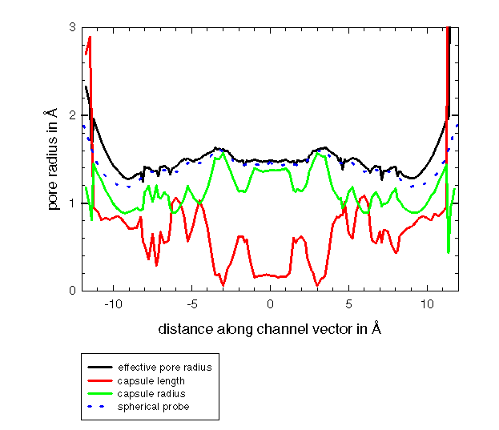

Pore Dimensions of Ion Channels: the pore radius of
gramicidin channel


The pore radius of the gramicidin A channel form

The graph shows the pore radius of the gramicidin A channel
form conformation determined by Ketchem et al.13
The dotted blue line shows the pore radius found with
the spherical probe used in the original HOLE
algorithm. The black line shows the effective radius found
with a spherocylinder used as a probe. The difference between
the two lines shows that that channel is only slightly anisotropic:
as demonstrated by the low value of capsule radius found (shown in red).
A radius of 1.15Å is necessary to accommodate a water molecule
- the channel is sufficiently large to allow water molecules along its
whole length.
Oliver S. Smart
(last modified 23/9/96)